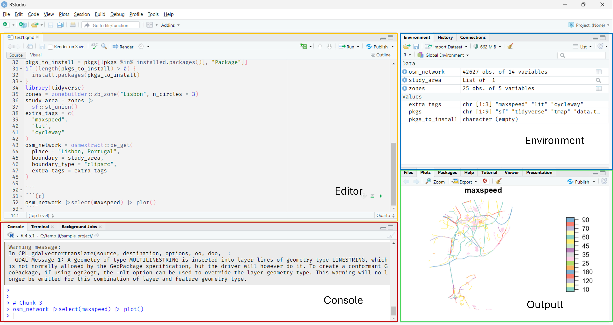
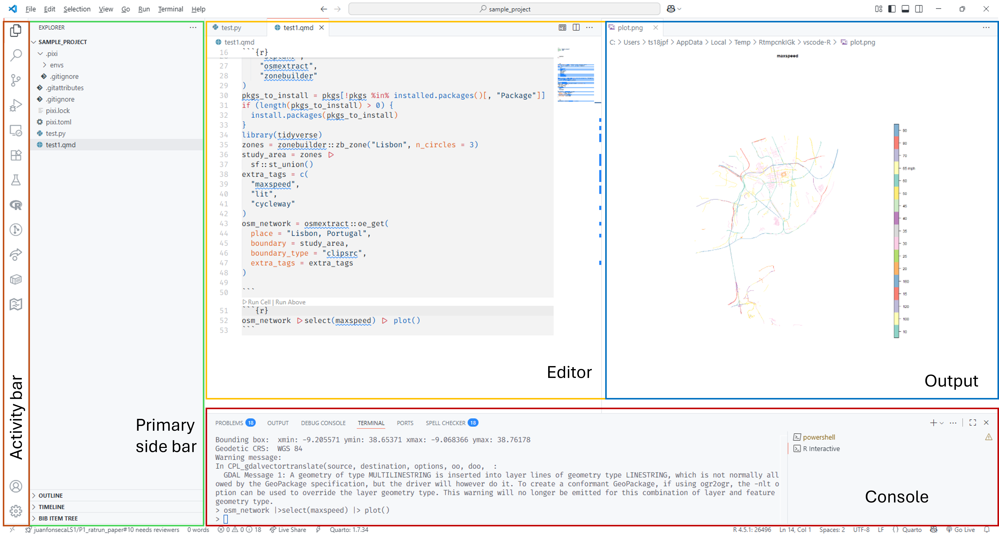

Welcome to the Fundamentals!
This section covers the essentials you need to get started with the concepts and tools for data science.
Integrated Development Environments (IDEs)
Your toolkit for writing code
RStudio
- Source Editor (top-left): Write and edit R code
- Console (bottom-left): Code execution and results
- Environment/History (top-right): Variables and command history
- Files/Plots/Packages/Help (bottom-right): File browser and help
Tip: Customize the layout via View → Panes → Pane Layout
VS Code
- Activity Bar (left): Switch between views (Explorer, Search, Source Control, Extensions)
- Side Bar (left): File explorer and other views
- Editor (left): Write your code
- Console (bottom): Run commands and see output
- Output: (right): Preview visual outputs/documents
Popular Extensions: Python, R, Pylance, Quarto
The fundamentals of R
- how to organize your work
- basic data types and structures
- using R for calculations
Organizing Your Work
Project structure and file paths
Recommended Folder Structure
my-project/
├── data/
│ ├── raw/ # Original data files
│ └── processed/ # Cleaned data
├── code/
│ ├── analysis.R
│ └── plots.R
├── outputs/
│ ├── figures/
│ └── results/
├── README.md
└── my-project.RprojTips:
- Keep your work organised for easy maintenance in
projectfolders. - Use RStudio projects (
.Rprojfiles) to manage your R work. - Use meaningful folder and file names.
- Keep data separate from code and outputs.
- Keep raw data unchanged; process copies instead.
Working with Paths in R
Relative paths (from current working directory):
Absolute paths (full path from root):
Best practice: Avoid using absolute paths when working locally.
Data Types in R
Key Types:
numeric: Real numbersinteger: Whole numbers onlycharacter: Text stringslogical: TRUE or FALSE
Vectors in R
Sequences of values of the same type:
Data Frames in R
Tables with rows and columns:
Lists in R
Flexible containers for mixed types:
Using R
R as a Calculator
Simple operations:
See: Arithmetic Operators
Main Operators in R
Two main operators you’ll use often:
- Assignment:
<-or=to assign values to variables
- Pipe:
|>to chain commands (introduced in R 4.1.0) read it as “then”
Subsetting data
Extract specific elements from data structures:
More on subsetting: Advanced R
Control Flow
Making decisions and repeating tasks
If Statements in R
Execute code conditionally:
For Loops in R
Repeat code multiple times:
Using Packages in R
Packages are collections of functions to extend capabilities: Different types of data/sources, different methods, more efficient coding, etc.

Source: Storybench
Installing and Loading Packages
Finding Documentation
Key Takeaways
✅ Know your IDE (RStudio or VS Code)
✅ Understand basic data types in R
✅ Know the difference between data structures
✅ Organize your work with folder structure
✅ Use relative paths for portability
✅ Control program flow with if statements and loops
✅ Learn how to install and use packages
✅ Know where to find documentation
Python Content (Optional)
If you’re interested in Python, here are equivalent concepts
The Fundamentals of Python
Organising Your Work
Project structure and file paths
Recommended Folder Structure
my-project/
├── data/
│ ├── raw/ # Original data files
│ └── processed/ # Cleaned data
├── code/
│ ├── analysis.py
│ └── plots.py
├── outputs/
│ ├── figures/
│ └── results/
├── README.md
└── requirements.txtTips:
- Keep your work organised for easy maintenance
- Use meaningful folder and file names
- Keep data separate from code and outputs
- Keep raw data unchanged; process copies instead
Working with Paths in Python
Relative paths (from current working directory):
Absolute paths (full path from root):
Best practice: Avoid using absolute paths when working locally.
Data Types in Python
Key Types:
int: Integersfloat: Decimal numbersstr: Text stringsbool: True or False
Lists in Python
Ordered collections (can be mixed types):
Dictionaries in Python
Key-value pairs:
NumPy Arrays
Similar to Python lists but more efficient for numerical operations:
Pandas DataFrames
Tables with rows and columns:
Using Python
Python as a Calculator
Simple operations:
See: Python Operators
Main Operators in Python
Key operators you’ll use regularly:
- Assignment:
=to assign values to variables
- Method chaining with
.to chain operations
Subsetting Data
Extract specific elements from data structures:
More on subsetting here: NumPy Indexing
Control Flow
Making decisions and repeating tasks
If Statements in Python
Execute code conditionally:
For Loops in Python
Repeat code multiple times:
Using Packages in Python
Packages are collections of functions to extend capabilities: Different types of data/sources, different methods, more efficient coding, etc.